Direct with AI
Design and prototype directly with AI.
 Felipe Parreiras
Felipe Parreiras
Using AI in design workflows is now part of reality. Using AI to brainstorm and prototype is not only possible, but increasingly expected of Product Designers today.
01 · Approaches
Design and prototype directly with AI.
Use Figma MCP to maintain manual control over the design.
02 · Prototypes
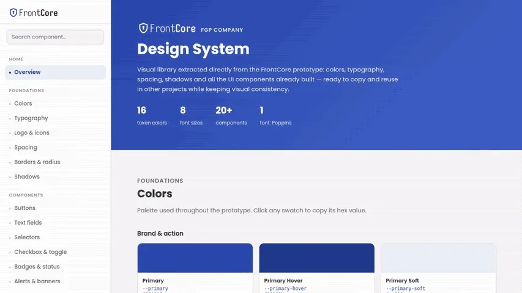
I Claude Code
Using Claude Code we can easily create an interactive Design System with tokens, HTML, CSS and an entire JSON file ready to be copied by the dev team and used in real products.
It was created for a fictional product only to showcase how an interactive design system works.
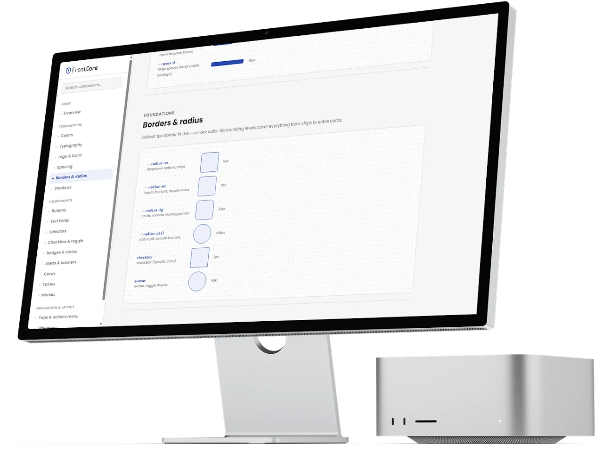
Having a live design system helps not only the tech team, but also POs and Stakeholders because they can navigate the DS just like any other website and use the information in specification pages. It can also be used to show new employees the company visual identity during the onboarding.
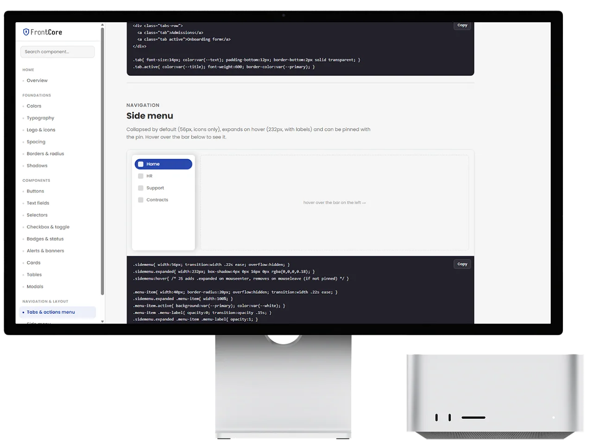
Developers can easily copy the components’ HTML and CSS, as well as entire JSON files, such as the colours.
This approach speeds up the development process.
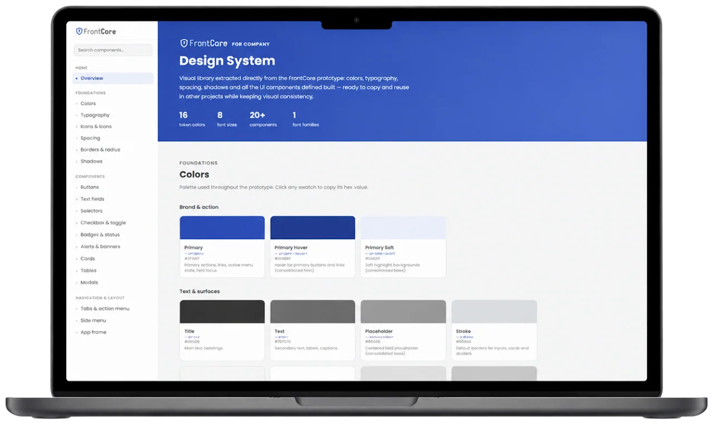
II Claude CodeFigma MCPGitHub
Pathway is a prototype for designing thoughtful job application experiences. It gives hiring teams a visual flow builder where they can create roles, arrange application steps, connect those steps into journeys, and define how candidates move through the process. The prototype includes seeded examples such as Senior Product Designer and Senior Full-Stack Engineer, as well as the ability to create new flows from scratch.
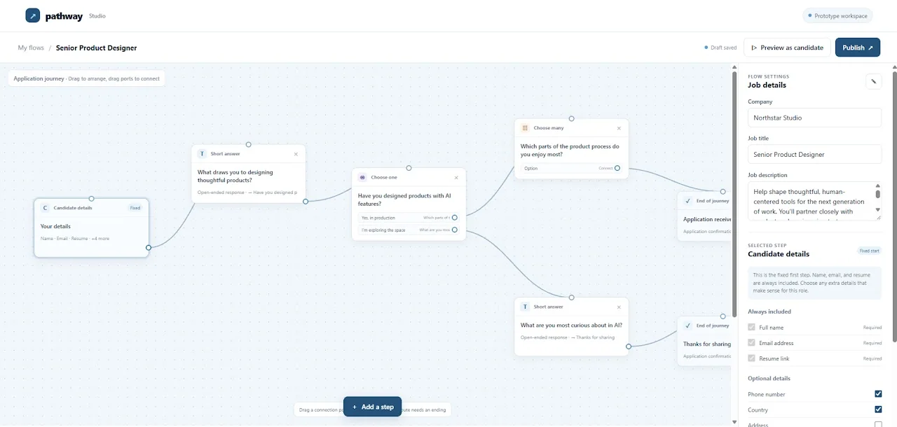
The builder supports several types of steps: candidate information, short-answer questions, single-choice questions with branching paths, multi-choice questions, and ending screens. Hiring teams can configure the company, job title, description, optional candidate fields, question text, answer options, and completion outcomes. The flow can then be previewed from the candidate’s perspective or published as a shareable application link.
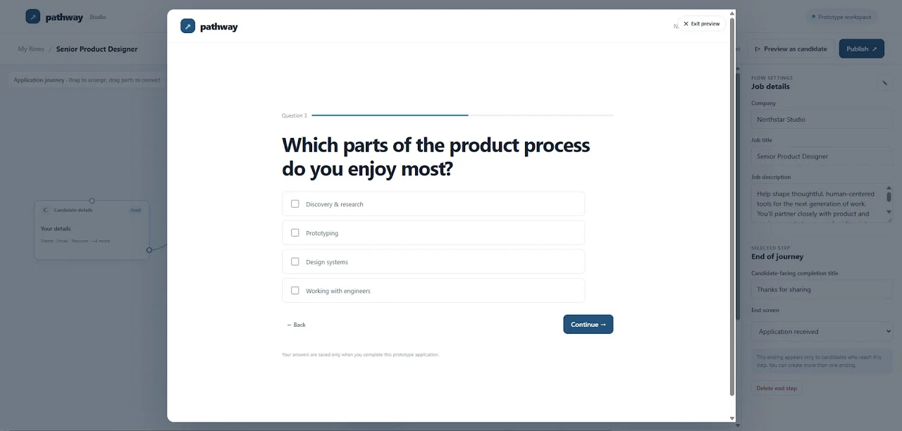
From the candidate’s perspective, Pathway presents a clear, welcoming application form that begins with essential information such as name, email, and resume, etc. Depending on the role’s configuration, candidates may answer open-ended questions, select from options, or follow different paths based on their responses, with progress and completion states designed to make the process feel focused.
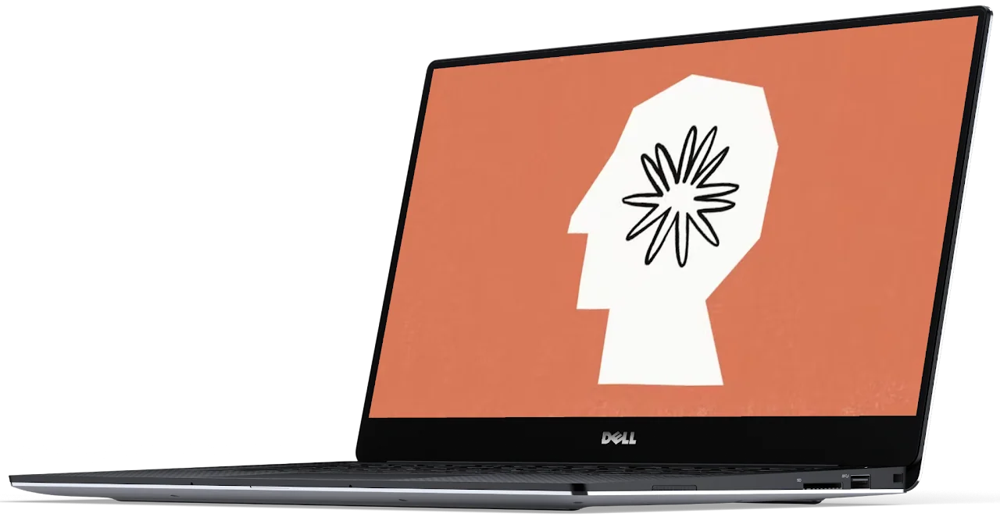
I created Pathway through an AI-assisted process using Claude Code. I used GitHub as the project repository and publishing platform, while iterating through the product concept, flow builder, and candidate experience conversationally.
I also used the Figma MCP with Claude Code to share the intended design system, typography, colours, and wireframe concepts. This helped Claude translate the visual direction into a functional, responsive prototype.
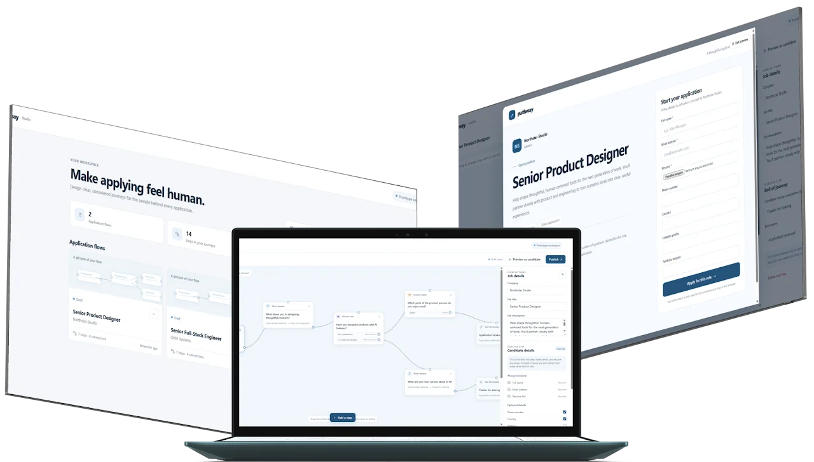
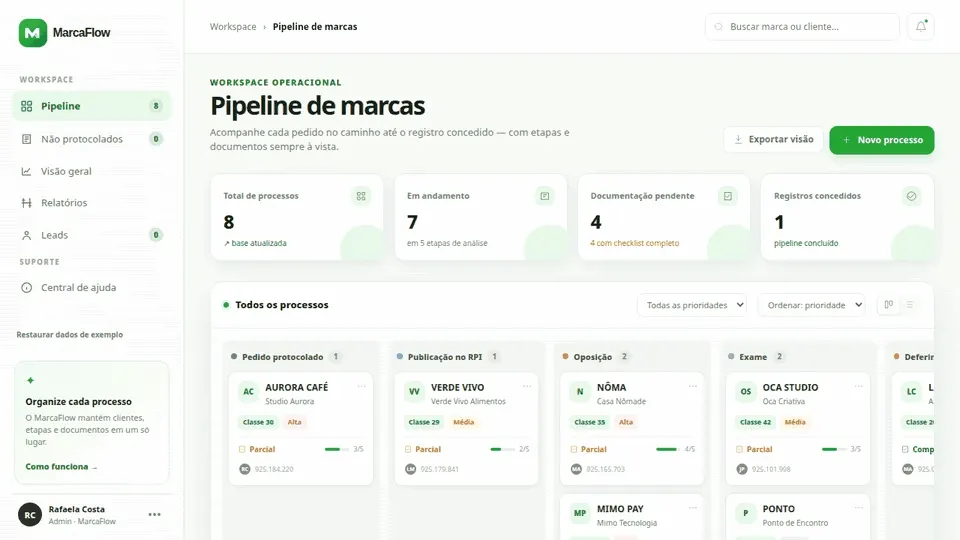
III ManusGitHub
MarcaFlow is a live prototype for managing trademarks, centralizing leads, clients, documents, and process stages in one place. It includes a Kanban pipeline, Leads screen with table or Kanban views, filters, checklists, Google Drive links, reports, performance indicators, and record movement between process stages.
MarcaFlow was created 100% through an AI-assisted coding process. For this specific project I used Manus. I described the desired workflows—such as the Pipeline, Leads, Non-Protocolled Clients, Overview, and Reports screens—and the AI translated those ideas into interface components, data structures, navigation, filters, checklists, Kanban interactions, local storage behaviour, and responsive layouts. Features were built gradually, tested in the browser, adjusted based on visual feedback, and refined through short development cycles.
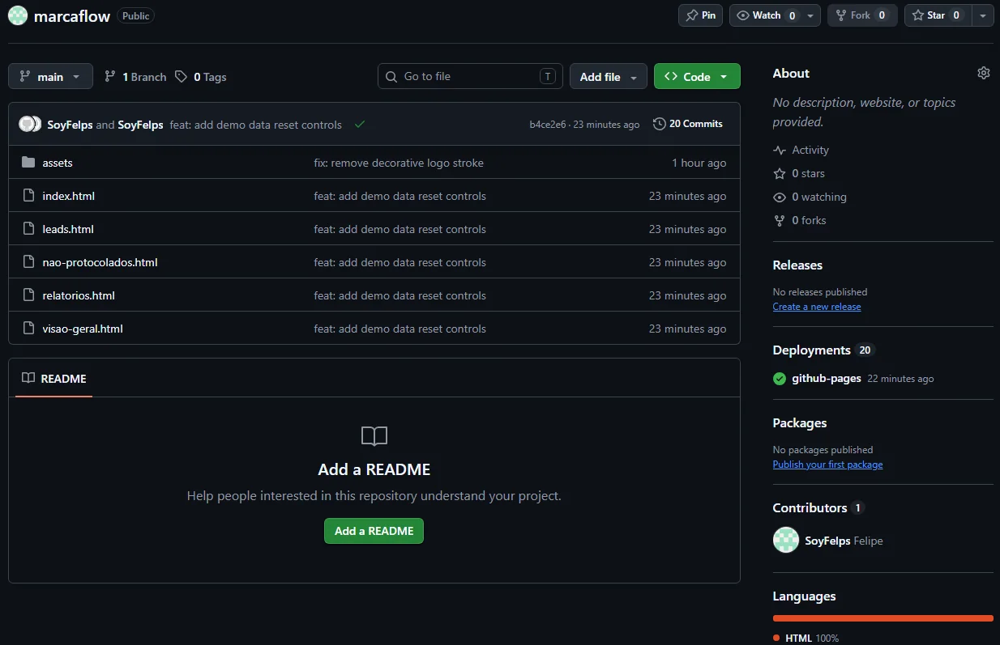
GitHub served as the project’s central code repository and collaboration layer. Through the GitHub connector, the AI could inspect the existing files, understand the project structure, update multiple pages consistently, create assets such as the MarcaFlow SVG logo, commit changes, push them to the repository, and verify the published files. I remained responsible for defining priorities and reviewing the results, while the AI handled implementation, testing, debugging, and synchronization across the application. This combination of user direction, AI-generated code, browser validation, and GitHub version control made it possible to evolve MarcaFlow quickly as a functional prototype.
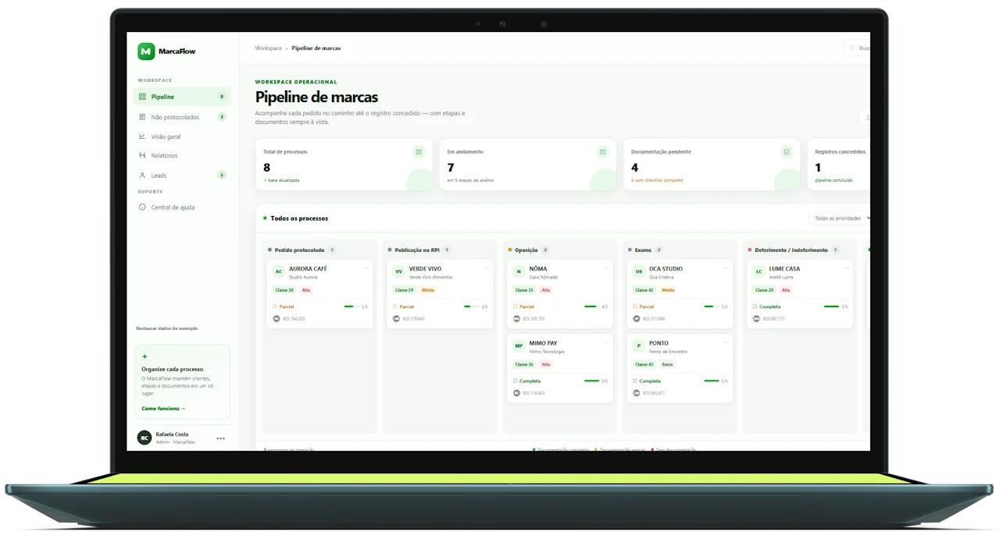